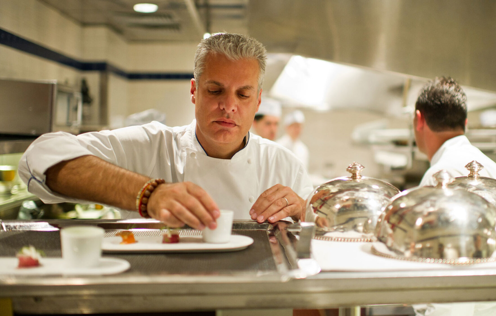
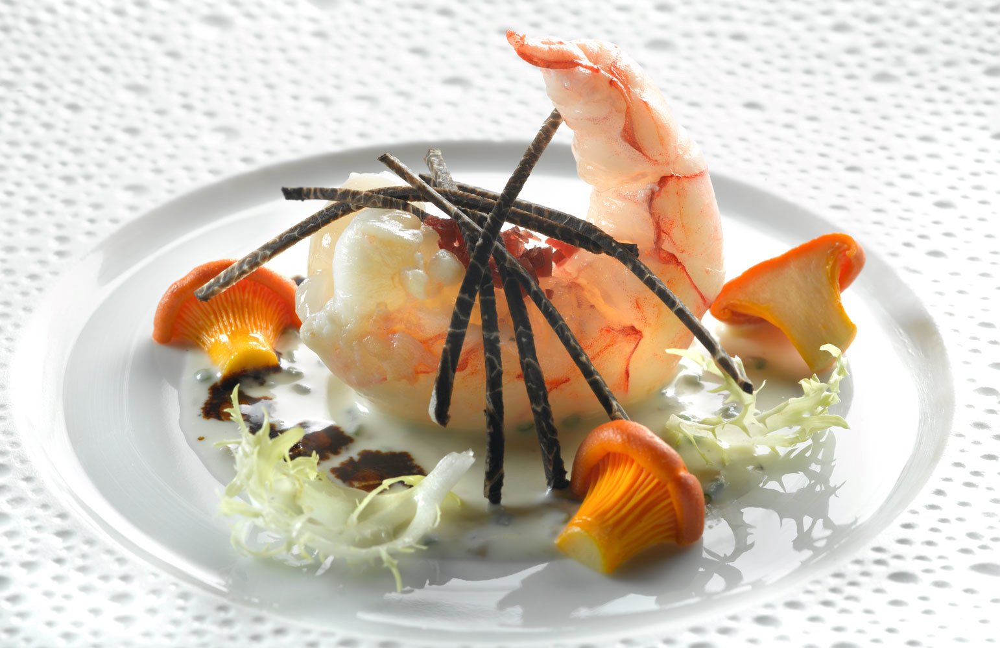
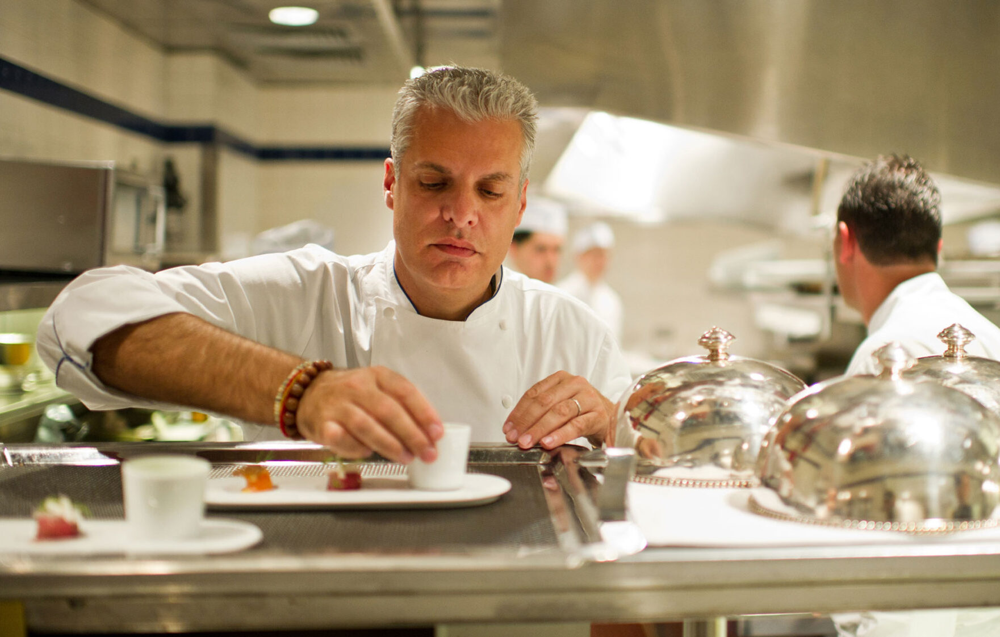
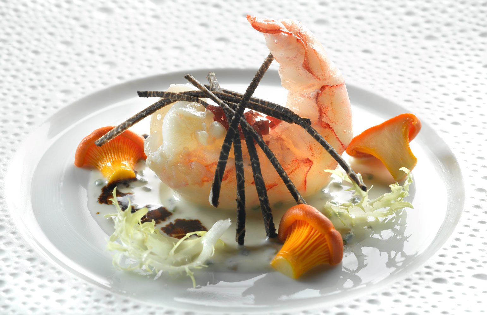

Chef's Table at Brooklyn Fare


Location: 431 W. 37th St., New York, 10018, United States
Chef's Table at Brooklyn Fare is Brooklyn Fare's three-Michelin-starred restaurant. Settle in for a dining experience featuring the cuisine of Chef César Ramirez. Inspired by Japanese cuisine and French technique, courses change to reflect products in season. The establishment seats up to 18 guests around a counter. Although it is hard to get reservations at the restaurant, there are regulars. The wait for a reservation is up to six weeks. The tasting menu is predominantly fish & shellfish, with one or two meat courses and a variety of desserts. The price is $395 per person, plus tax. Chef's Table at Brooklyn Fare has partnered with OpenTable to provide free, secure, and instantly confirmed online reservations.
Masa
Location: 10 Columbus Circle, New York, 10019, United States
Masa (NYC) is a Japanese and sushi restaurant located in Manhattan in New York City. The restaurant was opened by Chef Masa Takayama in 2004 and has held Three Michelin stars since 2009. Chef Masa Takayama apprenticed under the direction of sushi master, Suhiyama Toshiaki, at Tokyo’s famed Ginza Sushi-ko where he learned to appreciate an intimate relationship with food and dining to create a full sensory experience. The courses build on seasonal properties utilized only in their freshest, most quintessential state. The cost is $650 per person, not including beverage and tax. Masa is currently accepting reservations by email or through Tock.
Le Bernardin
 



Location: 155 W. 51st St., New York, 10019, United States
Le Bernardin by Eric Ripert is a French seafood restaurant in Midtown Manhattan in New York City. Gilbert Le Coze and his sister Maguy Le Coze started the restaurant in Paris in 1972, where it was called Les Moines de St. Bernardin. They restarted the restaurant in New York in 1986, not long after receiving a third Michelin star. Signature dishes include kindai maguro (farmed Pacific bluefin tuna) and wagyu beef. The price is $290 per person, $440 with wine pairing per person. Masa is currently accepting reservations by phone or via RESY.